Besides them, there are many other templates (called subtemplates) that are used internally. Those templates work as procedures invoked from the main templates as well as from each other.
The entire “XSDDoc” template set (version 2.8.1) consists of 71 templates.
{docflex-xml}/templates/XSDDoc/xsddoc.xmltype
Here is its full content:
And here is the meaning of each line:
1
2
3
4
5
6
7
8
9
10
11
12
13
14
15
16
17xsddoc.name = W3C XML Schema Files
xsddoc.doc = Represents any number of W3C XML Schema Definition (XSD) files
xsddoc.xsd.files = http://www.w3.org/2001/XMLSchema.xsd
xsddoc.xsd.catalogs = urn:docflex-com:xml:defaultcatalog
xsddoc.xsd.includeAbstractTypes = true
xsddoc.ns.1.prefix = xs
xsddoc.ns.1.uri = http://www.w3.org/2001/XMLSchema
xsddoc.ns.2.prefix = xhtml
xsddoc.ns.2.uri = http://www.w3.org/1999/xhtml
xsddoc.pseudo-elements.all = on
xsddoc.defaultRootElement = Documents
xsddoc.imageProvider.class = %IMAGE_PROVIDER_CLASS%
xsddoc.imageProvider.XMLSpy.version = %XMLSPY_VERSION%
xsddoc.imageProvider.XMLSpy.classPath = %XMLSPY_CLASSPATH%
xsddoc.imageProvider.XMLSpy.libPath = %XMLSPY_LIBPATH%
xsddoc.imageProvider.OxygenXML.command = %OXYGENXML_COMMAND%
xsddoc.imageProvider.OxygenXML.config = %OXYGENXML_CONFIG%
| Line | Explanation |
|---|---|
| 1 | The XML Type's full name |
| 2 | A short description of the XML Type |
| 3 |
This setting is crucial for the whole XML Type definition!
It specifies one or several XML schema files that will provide the datatype information about
all data-source XML files possible to process by any template set based on
this XML Type.
In this case, it is http://www.w3.org/2001/XMLSchema.xsd (i.e. “XML schema for XML Schemas”) and the possible data-source XML files are any XML schema (XSD) files themselves. For further details, please see: Defining XML Type | Assigning XML Schemas | xsd.files |
| 4 |
The URI of an XML catalog that redirects the locations of the XSD files
(specified in line 3 as well as any other
XML schemas referenced from them) to some other locations, which may be easier to access.
The specified URI ( |
| 5 |
Indicates that all global types (i.e. xs:simpleType and xs:complexType)
defined in the XML schemas (line 3) should be exposed as abstract element types.
In particular, this allows programing in templates the searching and iterating of elements not only by their names, which can be directly found in the XML files, but also by the element types, which are associated with the elements according to the XML schemas. For more details about this setting, please see: Defining XML Type | Assigning XML Schemas | xsd.includeAbstractTypes |
| 6-9 |
These lines specify all namespace prefixes used in XSDDoc templates.
Templates, like XML documents they process, need to deal with namespace URIs, which are typically long character strings. Therefore, some shortcuts are needed to reference to particular namespaces. For more details, please see: Defining XML Type | Assigning XML Schemas | Declaring Namespaces |
| 10 |
This setting says that, in addition to normal elements and attributes, all other nodes of
an XML document (i.e. DOM)
should be exposed as special elements (called
pseudo-elements).
This is needed to be able to process with templates the entire content of the XML file, for instance, to fully reproduce it in the generated documentation along with the special formatting and hyperlinks (see schema-overview.tpl and nodeSource.tpl templates). For more details, please see: Defining XML Type | Pseudo-elements |
| 11 |
Indicates that all the processing should start from the
#DOCUMENTS pseudo-element, which
is created by the template interpreter to represent the list of all data-source XML files specified
on the generator command-line for processing.
That virtual element will be passed to any main template (specified on the command-line with -template option), as the template's root element, from which the processing of the template starts. This allows XSDDoc to document any number of XML schemas at once. For more information, please see: Defining XML Type | Pseudo-elements | #DOCUMENTS |
| 12 |
Specify an Element Image Provider
class.
Here, “elements” mean not XML schema element components,
but elements of the XML document that describes the schema -- that it the XSD file.
The “images” are diagrams that depict
content models
of XML schema components defined by some of those elements
(such as The Element Image Provider's job is to generate those diagrams and allows inserting them in the output. In practice, it is a bridge to some other software that generates those diagrams, which means it is an entry point of some of the integrations.
Currently, only one integration supports this: the
integration with XMLSpy.
But in the near future more similar integrations are planned.
That's why the image provider class is specified not directly, but via For further information, please see: |
| 13 |
XMLSpy Integration parameter:
The version number of the XMLSpy being used. It cannot be obtained via XMLSpy API,
yet it is needed in the XSDDoc templates for the integration support.
The XMLSpy version number is passed via 'XMLSPY_VERSION'
macro,
which can be specified on the command line.
See also: |
| 14 |
XMLSpy Integration parameter:
The Java classpath to XMLSpy Java API.
It is passed via 'XMLSPY_CLASSPATH'
macro,
which can be specified on the command line.
For more details, please see: DocFlex/XML | Integrations | XMLSpy | Setting Details | XMLSpy API Java Class Path |
| 15 |
XMLSpy Integration parameter:
The pathname of the directory containing a non-Java implementation of XMLSpy API
(this is a Windows DLL that provides a bridge between Java and XMLSpy's Windows native code).
It is passed via 'XMLSPY_LIBPATH'
macro,
which can be specified on the command line.
For more details, please see: DocFlex/XML | Integrations | XMLSpy | Setting Details | XMLSpy API Library Path |
| 16 |
OxygenXML Integration parameter:
Specify the OS command to call OxygenXML's own XML schema doc-generator.
It is passed via 'OXYGENXML_COMMAND'
macro
specified on the command line.
For more details, please see: DocFlex/XML | Integrations | Oxygen XML | Setting Details | OS command to run OxygenXML's own DocGen |
| 17 | OxygenXML Integration parameter: Specify an alternative pattern file for the settings file passed to OxygenXML's XML schema doc-generator. This may be needed in case when that settings file substantially changes in the future OxygenXML version, so that one used now by the integration (and stored in resources) will not be adequate for this. |
The following screenshot shows a part of the tree representation of the element types and their attributes constructed by this XML Type definition (click on the picture to see a more expanded tree view):
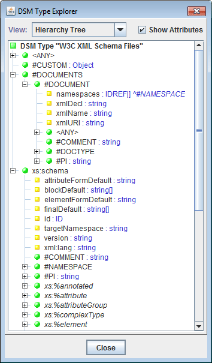
| The term “DSM Type” (Data Source Model Type) visible on the screenshot is a generalization of the notion of XML Type extended to the whole DocFlex Technology, which is able to process in a similar way not only XML-files, but any other data-sources provided via some Java APIs. For example, see DocFlex/Javadoc. |
Here is how this template looks when open in the Template Designer (click to enlarge):
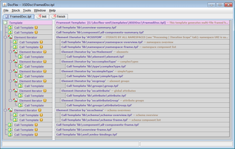On the following screenshot you can see an example of the documentation generated with FramedDoc.tpl (directly from the file: http://www.w3.org/2001/XMLSchema.xsd). Click to view the real HTML:
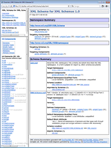The FramedDoc.tpl template is interpreted as follows:
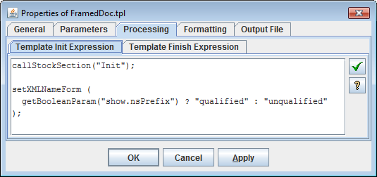
'index.html').
That file starts the whole documentation to display particular HTML documents in three frame windows:
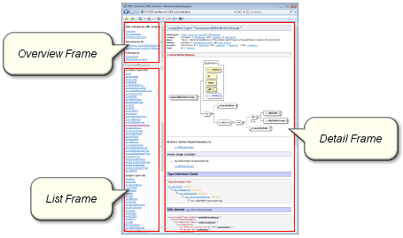
For further details about the usage of each frame, see: Documentation Organization | Framed HTML Documentation | Frameset Structure.The frameset file is generated according to the definition specified in the “Output File | Frameset Structure” tab of the FramedDoc.tpl properties dialog:
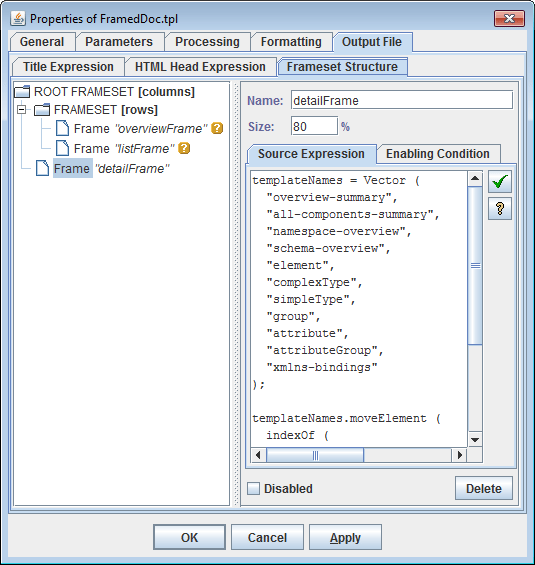
The expression specified in the “Source Expression” field (on the right panel) should return the pathname (or URL) of a document to be initially loaded in the given frame.
However, the initial content of the detailFrame may be overridden dynamically by the Javascript, which is inserted
in index.html according the “HTML Head Expression”:
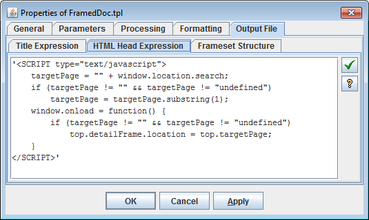
This particular Javascript obtains a URL parameter (specified after '?' in the initial URL) passed toindex.html.
If the parameter exists, the detailFrame will be reloaded according to the new URL found in the parameter.
That allows you to construct URLs like this one:
http://www.filigris.com/docflex-xml/xsddoc/examples/html/XMLSchema/index.html?schemas/XMLSchema_xsd/elements/element.htmlwhich will open the frameset documentation directly on a specified page.
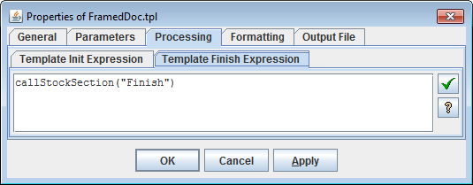
which invokes the execution of “Finish” stock-section (click on the screenshot to enlarge): Currently, all it does is removing the temporary files produced by XMLSpy (when XMLSpy Integration is enabled).Here is how this template looks when open in the Template Designer (click to see the full screenshot):
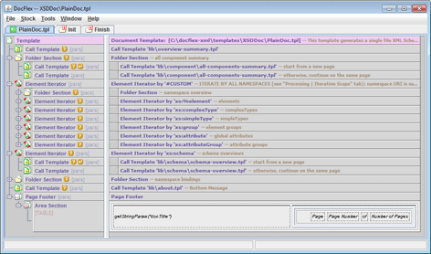The RTF output it generates is the most important. It delivers an unmatched quality printable RTF documentation. Here are a few pages of such a documentation generated with PlainDoc.tpl (click to enlarge):
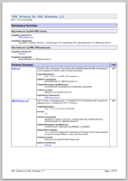
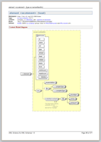
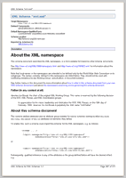
Calls:
about.tpl, all-components-summary.tpl, attribute.tpl, attributeGroup.tpl, complexType.tpl, element.tpl, group.tpl, init.tpl, localElementExt.tpl, namespace-overview.tpl, overview-summary.tpl, schema-overview.tpl, simpleType.tpl, xmlns-bindings.tpl, XMLSpy.tpl, OxygenXML.tpl